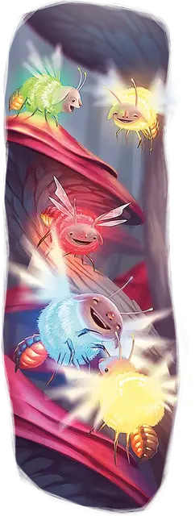

Рой солнцекрылов
Swarm of Sunflies
Средний рой крошечных Небожителей, хаотично-добрый

Класс Доспеха 13
Хиты 22 (5к8)
Скорость 10 футов, летая 40 футов
| мод | спас | ||
|---|---|---|---|
| СИЛ | 6 | −2 | −2 |
| ЛОВ | 17 | +3 | +3 |
| ТЕЛ | 10 | +0 | +0 |
| мод | спас | ||
|---|---|---|---|
| ИНТ | 4 | −3 | −3 |
| МДР | 10 | +0 | +0 |
| ХАР | 6 | −2 | −2 |
Чувства пассивное Восприятие 10
Языки понимает Небесный, но не говорит
Опасность 1 (200 опыта)
Бонус мастерства +2
Особенности
Рой. Рой может занимать пространство другого существа, и наоборот, и рой может перемещаться через любой проход, достаточный для Крохотной стрекозы. Рой не может восстанавливать хиты и получать временные хиты.
Действия
Жало. . Рукопашная атака оружием: +5 к попаданию, досягаемость 0 футов, одна цель. Попадание: 10 (3к4 +3) колющего урона или 5 (1к4 +3) колющего урона, если у роя половина хитов или меньше. Кроме того, если солнцекрыл находится во Внешних землях, она вводит в цель токсин, действие которого определяется местоположением солнцекрыла:
• Верхний план. Цель начинает излучать яркий свет в радиусе 5 футов до конца своего следующего хода. В течение этого времени невидимость не оказывает на цель никакого влияния.
• Нейтральный план. Если цель концентрируется на заклинании или подобном эффекте, она теряет эту концентрацию.
• Нижний план. Скорость цели снижается на 10 футов до конца её следующего хода.
Ослепительные огоньки (перезарядка 6). Рой начинает ослепительно сиять своими огоньками. Каждое существо в пределах 15 футов от роя должно преуспеть в спасброске Телосложения Сл 10, иначе станет ошеломлённым на 1 минуту. Существо может повторять спасбросок в конце каждого своего хода, оканчивая на себе действие эффекта в случае успеха.
Бонусные действия
Свечение. Рой солнцекрылов излучает яркий свет в радиусе 15 футов и тусклый свет еще на 15 футов. Он может погасить или восстановить этот свет бонусным действием.
Описание
“Знаете ли вы, что если поднести сонцекрыла к уху, то можно услышать, каково это - быть ужаленным солнцекрылом?”
– Морте
Солнцекрылы - причудливые, жужжащие обитатели Внешних планов. Они много путешествуют и являются важными индикаторами здоровья планов, в которых они обитают; когда солнцекрылам приходится нелегко, то же самое происходит и с местами, которые они населяют. У солнцекрылов есть жала, которые они используют для введения естественных токсинов в других существ. Планарная магия может изменить токсин солнцекрыла таким образом, что его эффект будет отличаться в зависимости от того, на каком Внешнем плане он находится.
Многие обитатели планов испытывают сильные чувства к солнцекрылам, рассматривая их как отвратительных вредителей или очаровательных домашних животных. Солнцекрылы в Сигиле часто являются домашними животными любящих и зачастую заботливых владельцев.